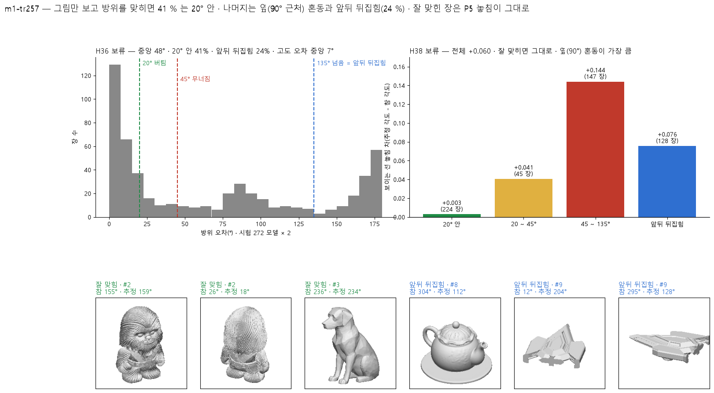

실험 m1_tr0257_h036_각도
목표 G1.1a 한 장 → 3 면도 · G1.1 사진 → 3 면도(중간 표현) · G1 첫 제품 — 피규어 · 메카 사진 여러 장 + 치수 → 숨은선 3 면도 + 파츠별 CAD · G0 임의의 이미지 → CAD 코드 · 빌린 가정 5: 생성기기하 · 흰바탕 · 렌더화풍 · 정사영 · 시점앎 · 갚는 계획: 학습 없음 · 시점앎을 이 실험에서 갚아 봄(각도를 그림에서 추정) · 판정은 목표 시험지(원화CAD짝 292 렌더) — 흰바탕 · 렌더화풍은 실물 사진으로 그 뒤 · 정사영은 원근 렌더로 그 뒤 · 목표 시험지 값: 안 잼 (!)
사용자가 각도를 모를 때, 그림만 보고 방위를 몇 도 안으로 맞히고, 그 추정 각도를 얼린 P5 에 넣으면 놓침이 얼마나 느나?
판정 · H36 보류(방위 오차 중앙 48° [29, 74] — 20° 안 41 % · 옆 혼동 · 앞뒤 뒤집힘 24 % 의 세 무리 · 고도 오차 7°) · H38 보류(추정 각도를 넣으면 놓침 +0.060 [0.049, 0.073] — 20° 안 장은 +0.003 · 45 ~ 135° 장은 +0.144) — 그림만 보고 한 번에 맞히는 각도는 절반쯤 쓸 만하고, 해는 큰 오차(옆 혼동 · 앞뒤)에서 옴 · 다음: 방향 분포의 후보 여럿(앞 · 옆 · 뒤)을 받아 고르기 · 사진 둘이면 서로 맞춰 보기
| 가설 | 주장 | 결과 | 근거 |
|---|---|---|---|
| H36 | 공개 방향 추정 모델은 그림만 보고 방위를 20° 안으로 맞힌다(P5 가 버티는 폭 안) | 보류 | 시험 272 × 2 · 평균 69.3° · 20° 안 41 % · 45° 안 49 % · 앞뒤 뒤집힘(> 135°) 24 % · 고도 오차 중앙 6.7° · 앞면 신뢰도 < 0.5 12.9 % · 표기(보정 20 모델) 부호 + · 어긋남 355° · 보정 중앙 오차 24.3° |
| H38 | 추정 각도를 얼린 P5 에 넣어도 참 각도와 놓침이 거의 같다 | 보류 | 시험 272 · 놓침 참 0.155 → 추정 0.216 · 가짜 0.428 → 0.467 · 추정 방위 + 참 고도 0.216(고도 몫 거의 없음) · 장별 방위 오차 묶음 놓침 차: 20° 안 +0.003(224 장) · 20 ~ 45° +0.041(45) · 45 ~ 135° +0.144(147) · 앞뒤 뒤집힘 +0.076(128) |
분석
한 줄로
물음: 사용자가 각도를 모를 때, 그림만 보고 방위를 몇 도 안으로 맞히고, 그 추정 각도를 얼린 P5 에 넣으면 놓침이 얼마나 느나?
답: 반쯤 된다(둘 다 보류). 공개 방향 추정 모델(Orient Anything)은 41 % 의 장에서 방위를 20° 안으로 맞혔고, 그 장들은 추정 각도를 넣어도 P5 놓침이 그대로였다(+0.003). 나머지는 옆(90° 근처) 혼동과 앞뒤 뒤집힘(24 %)이고, 이 큰 오차가 놓침을 늘렸다(전체 +0.060). 고도는 7° 안팎으로 잘 맞혔다.
왜 이 실험을 했나
m1-tr256 에서 얼린 P5 는 방위가 20° 틀려도 버티고 45° 부터 무너졌다. 사용자는 실제 사용자가 각도를 모른다는 점을 짚었다. 그래서 그림만 보고 각도를 얼마나 맞히는지, 그 각도로 끝까지 가면 얼마나 잃는지를 학습 없이 쟀다.
바꾼 것
- 각도를 정답에서 받지 않고 Orient Anything(ICML 2025 · CC-BY-4.0 · 공식 데모 가중치)으로 그림에서 추정했다. 미세조정 없이 영샷이다.
- 표기 맞춤(방위 부호 · 정면 어긋남 · 극각 부호)은 보정 20 모델로만 했고 판정은 나머지 272 × 2 장이다.
- 그 각도를 얼린 P5 에 넣고 m1-tr256 과 같은 셈으로 놓침 · 가짜를 쟀다.
결과

| 가설 | 결과 | 판정선 | 판정 |
|---|---|---|---|
| H36 방위 오차 중앙 | 48° [29, 74] | 20° 이하 지지 · 45° 이상 기각 | 보류 |
| H38 보이는 선 놓침 추정 − 참 | +0.060 [0.049, 0.073] | +0.02 이하 지지 · +0.05 이상 기각 | 보류 |
왜 이렇게 나왔나
확인한 것
- 방위 오차는 20° 안 41 %, 45° 안 49 %, 135° 넘음(앞뒤 뒤집힘) 24 % 다. 분포가 0° · 90° · 180° 근처 세 봉우리다.
- 오차 묶음별 놓침 차는 20° 안 +0.003(224 장) · 20 ~ 45° +0.041(45) · 45 ~ 135° +0.144(147) · 앞뒤 뒤집힘 +0.076(128) 이다.
- 고도 오차 중앙 7° · 추정 방위에 참 고도를 넣어도 놓침이 같다(0.216) — 고도는 문제가 아니다.
- 앞면 신뢰도 0.5 미만(앞이 없다고 본 장)이 13 % 다.
짐작 (아직 확인 안 함)
- 앞뒤 뒤집힘은 앞 · 뒤 3 면도가 비슷해서 옆 혼동보다 덜 해롭다.
- 방향 분포에서 후보 여럿(정면 · 옆 · 뒤)을 받아 고르면 큰 오차 대부분을 막을 수 있다.
한계
- 렌더 회색 화풍을 검정 바탕에 넣었다. 실물 사진은 따로 재야 한다.
- 우리 「앞」(원화를 그린 쪽 +y)과 그 모델의 「앞」(의미상 앞)이 물체마다 다를 수 있다. 표기는 전체 하나로만 맞췄다.
- 메카 · 대칭 물체는 앞이 애매하다. 뒤집힌 예에 주전자 · 우주선이 있다.
배운 것과 다음
그림만 보고 한 번에 맞히는 각도는 절반쯤 쓸 만하다. 해는 고르게 큰 오차가 아니라 옆 혼동 · 앞뒤 뒤집힘에서 온다.
- 방향 분포에서 후보 몇 개(봉우리)를 받아 고르기 — 사진이 둘 이상이면 서로 맞는 후보를 고르고, 하나면 사용자에게 후보 두세 장을 보여 고르게 한다.
- 실물 사진에서 같은 셈.
- 시점 선화 M2 는 각도가 이 정도로 틀릴 수 있다는 전제로 짠다.
실험 기록
- 카드 · 각도257.py(흐름 · 추정 · P5 · 재기 · 그림) · 잼.json · 흐름.png · 결과.png · 원본 out/설명/캐드부품/모델257(추정.npz · 세기.npz · 맞춤.json) · 외부 코드 out/외부/OrientAnything(CC-BY-4.0)